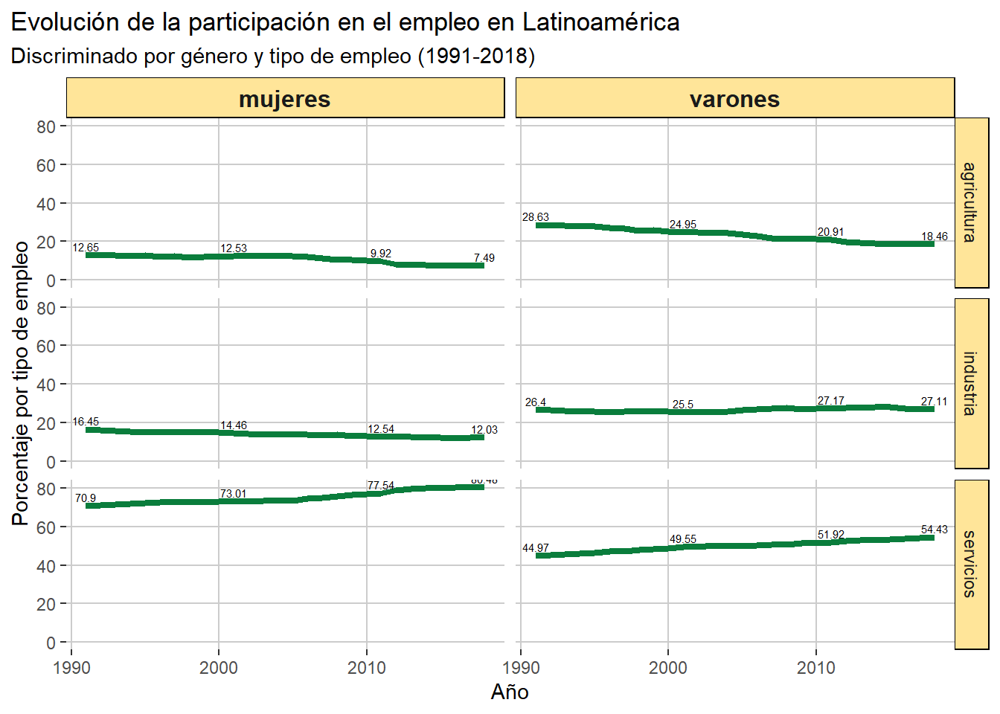
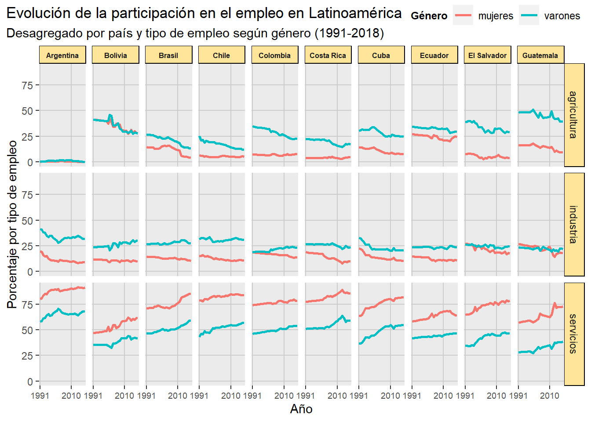
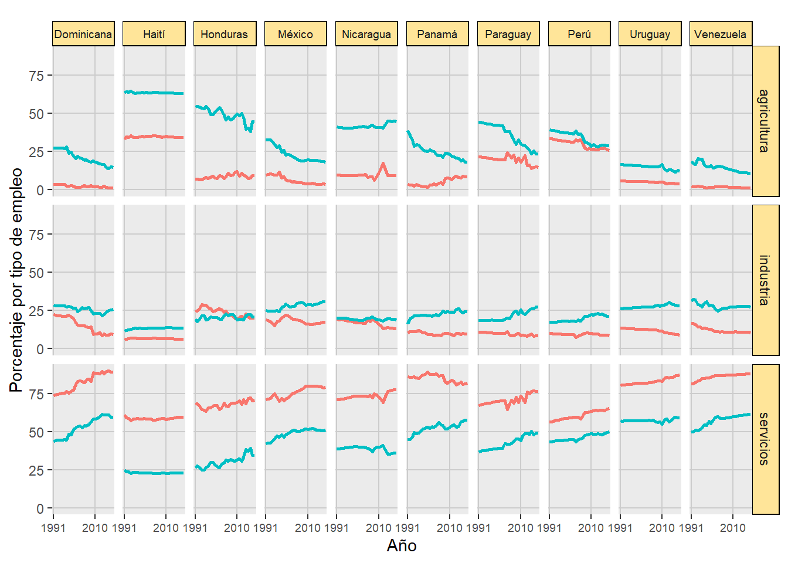
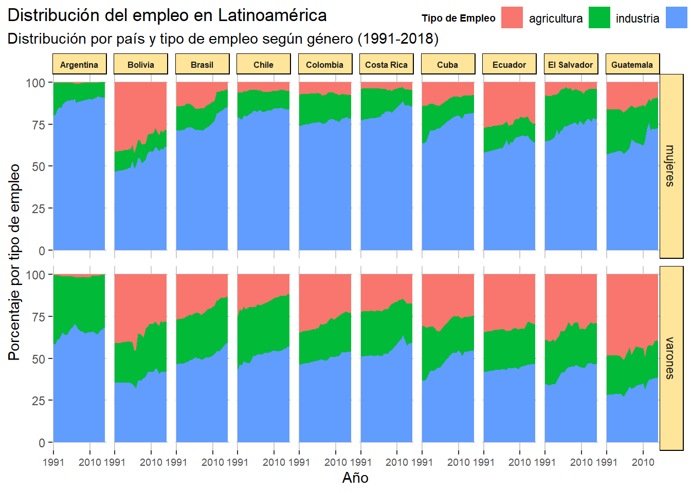
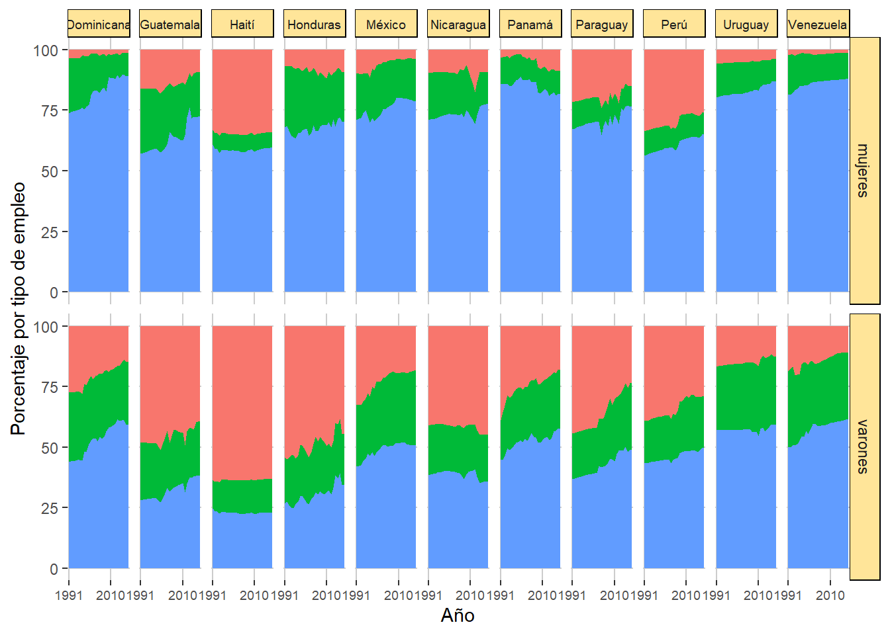

Entre la década de 1990 y la de 2010 ocurrieron procesos importantes de tecnificación en el agro, así como también como desarticulación de cierto entramado industrial. Es esperable que dentro de los paises en los que ocurrió más fuertemente estos fenómenos detectemos una disminución de la mano de obra agrícola e industrial respectivamente.
Latinoamérica en general
Inicialmente, hacemos una mirada general de los indicadores para Latinoamérica, en términos generales. Analizamos el tipo de empleo discriminado por género.

Como podemos ver se verifica la caída de la participación en la agricultura (total 40% en mujeres y 35% en varones). En cuanto a la industria la participación de las mujeres disminuyó un 26% mientras que la participación de los varones se mantuvo estable e incluso subió unas décimas porcentuales.
Por último, nos encontramos con un importante incremento en la participación en el rubro de servicios. Mientras que un 70,9% de las mujeres se dedicaban a este rubro en 1991, para 2018 lo hacía el 80,48%. Por el lado de los varones el indicador pasó de 44,97% a 54,43% respectivamente.
Mujeres y varones por tipo de empleo
Para observar con más detalles estos movimientos abrimos el análisis para poder mirar país por país

En cuanto a la agricultura podemos apreciar una baja sustantiva en la participación, destacándose en países como Bolivia, Brasil, Paraguay o Panamá. En países como Honduras o Panamá la baja dentro de los varones fue más significativa.
Respecto a la industria, apreciamos cierto incremento dentro de los varones de países como Bolivia, Paraguay o México. Por el contrario, las mujeres de Argentina, República Dominicana, Costa Rica o Colombia redujeron sensiblemente su participación.
Dentro del rubro de los servicios observamos un ascenso generalizado, destacándose Bolivia, Brasil, Cuba y República Dominicana.
Distribución dentro de cada género
Realizamos una visualización alternativa que es ver la evolución de la distribución dentro de cada género para cada país

Aquí podemos ver más nítidamente las estructuras de cada país. Tenemos países muy disímiles, podemos comparar a Argentina, donde el empleo agrario es prácticamente nulo con Haití, donde sigue siendo la ocupación más importante.
También en Bolivia, Guatemala, Nicaragua o Paraguay el empleo rural sigue siendo muy significativo.
En cuanto a la industria, Argentina, Brasil, Chile y México siguen manteniendo una contribución alta de la mano de obra, sobre todo dentro de la población masculina.
Por el rubro de los servicios encontramos una alta participación de las mujeres en casi todos los países. Se destacan Argentina, Costa Rica, Uruguay y Venezuela, por dar solo unos ejemplos.
Cabe señalar que dentro de la categoría de servicios se encuentra todo tipo de ocupación, desde quienes trabajan en empresas de tecnología hasta quienes se desempeñan dentro de trabajos mucho más precarios.
LS0tDQp0aXRsZTogIlRpcG8gZGUgRW1wbGVvIHBvciBHw6luZXJvIGVuIExhdGlub2Ftw6lyaWNhIg0Kb3V0cHV0OiANCiAgaHRtbF9kb2N1bWVudDoNCiAgICBjb2RlX2Rvd25sb2FkOiB0cnVlDQogICAgdG9jOiB0cnVlDQogICAgdG9jX2Zsb2F0OiB0cnVlDQotLS0NCg0KYGBge3Igc2V0dXAsIGluY2x1ZGU9RkFMU0V9DQprbml0cjo6b3B0c19jaHVuayRzZXQoZWNobyA9IFRSVUUpDQpzb3VyY2UoJ2FuYWxpc2lzL2FuYWxpc2lzX2RhdGFzZXQuUicsIGVuY29kaW5nID0gJ1VURi04JywgZWNobz1UUlVFKQ0Kc291cmNlKCdhbmFsaXNpcy9ncmFmaWNvX3RpcG9fZW1wbGVvLlInLCBlbmNvZGluZyA9ICdVVEYtOCcsIGVjaG89VFJVRSkNCg0KYGBgDQoNCkVudHJlIGxhIGTDqWNhZGEgZGUgMTk5MCB5IGxhIGRlIDIwMTAgb2N1cnJpZXJvbiBwcm9jZXNvcyBpbXBvcnRhbnRlcyBkZSB0ZWNuaWZpY2FjacOzbiBlbiBlbCBhZ3JvLCBhc8OtIGNvbW8gdGFtYmnDqW4gY29tbyBkZXNhcnRpY3VsYWNpw7NuIGRlIGNpZXJ0byBlbnRyYW1hZG8gaW5kdXN0cmlhbC4gRXMgZXNwZXJhYmxlIHF1ZSBkZW50cm8gZGUgbG9zIHBhaXNlcyBlbiBsb3MgcXVlIG9jdXJyacOzIG3DoXMgZnVlcnRlbWVudGUgZXN0b3MgZmVuw7NtZW5vcyBkZXRlY3RlbW9zIHVuYSBkaXNtaW51Y2nDs24gZGUgbGEgbWFubyBkZSBvYnJhIGFncsOtY29sYSBlIGluZHVzdHJpYWwgcmVzcGVjdGl2YW1lbnRlLg0KDQojIExhdGlub2Ftw6lyaWNhIGVuIGdlbmVyYWwNCg0KSW5pY2lhbG1lbnRlLCBoYWNlbW9zIHVuYSBtaXJhZGEgZ2VuZXJhbCBkZSBsb3MgaW5kaWNhZG9yZXMgcGFyYSBMYXRpbm9hbcOpcmljYSwgZW4gdMOpcm1pbm9zIGdlbmVyYWxlcy4gQW5hbGl6YW1vcyBlbCB0aXBvIGRlIGVtcGxlbyBkaXNjcmltaW5hZG8gcG9yIGfDqW5lcm8uDQoNCmBgYHtyIGVjaG89RkFMU0UsIHdhcm5pbmc9RkFMU0V9DQpwcmludChncmFmaWNvX3RpcG9fZW1wbGVvX2FuaW9fbGF0YW0pDQoNCmBgYA0KDQpDb21vIHBvZGVtb3MgdmVyIHNlIHZlcmlmaWNhIGxhIGNhw61kYSBkZSBsYSBwYXJ0aWNpcGFjacOzbiBlbiBsYSBhZ3JpY3VsdHVyYSAodG90YWwgNDAlIGVuIG11amVyZXMgeSAzNSUgZW4gdmFyb25lcykuIEVuIGN1YW50byBhIGxhIGluZHVzdHJpYSBsYSBwYXJ0aWNpcGFjacOzbiBkZSBsYXMgbXVqZXJlcyBkaXNtaW51ecOzIHVuIDI2JSBtaWVudHJhcyBxdWUgbGEgcGFydGljaXBhY2nDs24gZGUgbG9zIHZhcm9uZXMgc2UgbWFudHV2byBlc3RhYmxlIGUgaW5jbHVzbyBzdWJpw7MgdW5hcyBkw6ljaW1hcyBwb3JjZW50dWFsZXMuIA0KDQpQb3Igw7psdGltbywgbm9zIGVuY29udHJhbW9zIGNvbiB1biBpbXBvcnRhbnRlIGluY3JlbWVudG8gZW4gbGEgcGFydGljaXBhY2nDs24gZW4gZWwgcnVicm8gZGUgc2VydmljaW9zLiBNaWVudHJhcyBxdWUgdW4gNzAsOSUgZGUgbGFzIG11amVyZXMgc2UgZGVkaWNhYmFuIGEgZXN0ZSBydWJybyBlbiAxOTkxLCBwYXJhIDIwMTggbG8gaGFjw61hIGVsIDgwLDQ4JS4gUG9yIGVsIGxhZG8gZGUgbG9zIHZhcm9uZXMgZWwgaW5kaWNhZG9yIHBhc8OzIGRlIDQ0LDk3JSBhIDU0LDQzJSByZXNwZWN0aXZhbWVudGUuDQoNCg0KIyBNdWplcmVzIHkgdmFyb25lcyBwb3IgdGlwbyBkZSBlbXBsZW8NCg0KUGFyYSBvYnNlcnZhciBjb24gbcOhcyBkZXRhbGxlcyBlc3RvcyBtb3ZpbWllbnRvcyBhYnJpbW9zIGVsIGFuw6FsaXNpcyBwYXJhIHBvZGVyIG1pcmFyIHBhw61zIHBvciBwYcOtcw0KDQoNCmBgYHtyIGVjaG89RkFMU0UsIHdhcm5pbmc9RkFMU0V9DQpwcmludChncmFmaWNvX3RpcG9fZW1wbGVvX2FuaW9fcGFpc18xKQ0KcHJpbnQoZ3JhZmljb190aXBvX2VtcGxlb19hbmlvX3BhaXNfMikNCmBgYA0KDQoNCkVuIGN1YW50byBhIGxhIGFncmljdWx0dXJhIHBvZGVtb3MgYXByZWNpYXIgdW5hIGJhamEgc3VzdGFudGl2YSBlbiBsYSBwYXJ0aWNpcGFjacOzbiwgZGVzdGFjw6FuZG9zZSBlbiBwYcOtc2VzIGNvbW8gQm9saXZpYSwgQnJhc2lsLCBQYXJhZ3VheSBvIFBhbmFtw6EuIEVuIHBhw61zZXMgY29tbyBIb25kdXJhcyBvIFBhbmFtw6EgbGEgYmFqYSBkZW50cm8gZGUgbG9zIHZhcm9uZXMgZnVlIG3DoXMgc2lnbmlmaWNhdGl2YS4NCg0KUmVzcGVjdG8gYSBsYSBpbmR1c3RyaWEsIGFwcmVjaWFtb3MgY2llcnRvIGluY3JlbWVudG8gZGVudHJvIGRlIGxvcyB2YXJvbmVzIGRlIHBhw61zZXMgY29tbyBCb2xpdmlhLCBQYXJhZ3VheSBvIE3DqXhpY28uIFBvciBlbCBjb250cmFyaW8sIGxhcyBtdWplcmVzIGRlIEFyZ2VudGluYSwgUmVww7pibGljYSBEb21pbmljYW5hLCBDb3N0YSBSaWNhIG8gQ29sb21iaWEgcmVkdWplcm9uIHNlbnNpYmxlbWVudGUgc3UgcGFydGljaXBhY2nDs24uDQoNCkRlbnRybyBkZWwgcnVicm8gZGUgbG9zIHNlcnZpY2lvcyBvYnNlcnZhbW9zIHVuIGFzY2Vuc28gZ2VuZXJhbGl6YWRvLCBkZXN0YWPDoW5kb3NlIEJvbGl2aWEsIEJyYXNpbCwgQ3ViYSB5IFJlcMO6YmxpY2EgRG9taW5pY2FuYS4NCg0KDQojIERpc3RyaWJ1Y2nDs24gZGVudHJvIGRlIGNhZGEgZ8OpbmVybw0KDQpSZWFsaXphbW9zIHVuYSB2aXN1YWxpemFjacOzbiBhbHRlcm5hdGl2YSBxdWUgZXMgdmVyIGxhIGV2b2x1Y2nDs24gZGUgbGEgZGlzdHJpYnVjacOzbiBkZW50cm8gZGUgY2FkYSBnw6luZXJvIHBhcmEgY2FkYSBwYcOtcw0KDQpgYGB7ciBlY2hvPUZBTFNFLCB3YXJuaW5nPUZBTFNFfQ0KcHJpbnQoZ3JhZmljb19wYXJ0aWNpcGFjaW9uXzEpDQpwcmludChncmFmaWNvX3BhcnRpY2lwYWNpb25fMikNCg0KYGBgDQoNCkFxdcOtIHBvZGVtb3MgdmVyIG3DoXMgbsOtdGlkYW1lbnRlIGxhcyBlc3RydWN0dXJhcyBkZSBjYWRhIHBhw61zLiBUZW5lbW9zIHBhw61zZXMgbXV5IGRpc8OtbWlsZXMsIHBvZGVtb3MgY29tcGFyYXIgYSBBcmdlbnRpbmEsIGRvbmRlIGVsIGVtcGxlbyBhZ3JhcmlvIGVzIHByw6FjdGljYW1lbnRlIG51bG8gY29uIEhhaXTDrSwgZG9uZGUgc2lndWUgc2llbmRvIGxhIG9jdXBhY2nDs24gbcOhcyBpbXBvcnRhbnRlLg0KDQpUYW1iacOpbiBlbiBCb2xpdmlhLCBHdWF0ZW1hbGEsIE5pY2FyYWd1YSBvIFBhcmFndWF5IGVsIGVtcGxlbyBydXJhbCBzaWd1ZSBzaWVuZG8gbXV5IHNpZ25pZmljYXRpdm8uIA0KDQpFbiBjdWFudG8gYSBsYSBpbmR1c3RyaWEsIEFyZ2VudGluYSwgQnJhc2lsLCBDaGlsZSB5IE3DqXhpY28gc2lndWVuIG1hbnRlbmllbmRvIHVuYSBjb250cmlidWNpw7NuIGFsdGEgZGUgbGEgbWFubyBkZSBvYnJhLCBzb2JyZSB0b2RvIGRlbnRybyBkZSBsYSBwb2JsYWNpw7NuIG1hc2N1bGluYS4NCg0KUG9yIGVsIHJ1YnJvIGRlIGxvcyBzZXJ2aWNpb3MgZW5jb250cmFtb3MgdW5hIGFsdGEgcGFydGljaXBhY2nDs24gZGUgbGFzIG11amVyZXMgZW4gY2FzaSB0b2RvcyBsb3MgcGHDrXNlcy4gU2UgZGVzdGFjYW4gQXJnZW50aW5hLCBDb3N0YSBSaWNhLCBVcnVndWF5IHkgVmVuZXp1ZWxhLCBwb3IgZGFyIHNvbG8gdW5vcyBlamVtcGxvcy4gDQoNCkNhYmUgc2XDsWFsYXIgcXVlIGRlbnRybyBkZSBsYSBjYXRlZ29yw61hIGRlIHNlcnZpY2lvcyBzZSBlbmN1ZW50cmEgdG9kbyB0aXBvIGRlIG9jdXBhY2nDs24sIGRlc2RlIHF1aWVuZXMgdHJhYmFqYW4gZW4gZW1wcmVzYXMgZGUgdGVjbm9sb2fDrWEgaGFzdGEgcXVpZW5lcyBzZSBkZXNlbXBlw7FhbiBkZW50cm8gZGUgdHJhYmFqb3MgbXVjaG8gbcOhcyBwcmVjYXJpb3MuDQoNCg==